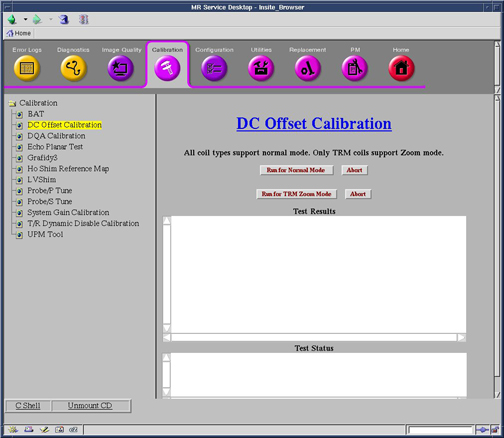

Operating Documentation
Direction 5440001-3, Rev# 6
Signa HDxt Service Methods
Module Version 1.0, Version Date 4/25/07
Operating Documentation |
| Required Persons | Preliminary Reqs | Procedure | Finalization |
|---|---|---|---|
| 1 | Not Applicable | 5 mins | Not Applicable |
| NOTE: | DC Offsets will need to be run during the initial system calibration, at the time of system upgrade or if the GP3 or Gradient Amplifier has been replaced. |
| Last Update | 07/22/2005 |
| Condition | Reference | Effectivity |
|---|---|---|
No scan in progress. Hit [End Exam] to end any exam in progress. | - | - |
Start the DC Offset Calibration Tool.
Starting non-proprietary service tools: From the Common Service Desktop, select [Calibration], [DC Offset Calibration] from the calibration menu, and select [Click here to start this tool] to start the procedure.
Illustration 1: DC Offset Calibration

Select [DC Offset Calibration], then [Run for Normal Mode] or [Run for TRM Zoom Mode]. You will need to run both modes if your system is a TwinSpeed.
Whole and Zoom will run and after completion results will display in the Test Results Box.
A report of “DC Offset calibration has been completed” signifies that the calibration is done. The calibration should only be run once for each mode (Whole or Zoom).
The calibration values for Gradients are stored in /usr/g/caldir/gram_tune.dat.WHOLE for Whole Body coil (or gram_tune.dat.ZOOM for Zoom coil) file. For HFD the values are stored in /usr/g/caldir/gradient_tune.dat.WHOLE or /usr/g/caldir/gradient_tune.dat.ZOOM. (Do not touch the Offset pots on the SGA’s.)
| NOTE: | The calibration values are relative to the site DC Offsets is run on and can vary greatly from site to site. |
Perform [TPS Reset] or end diagnostics.
No finalization steps.